x=1:3
y= 1+2*x+rnorm(3,0,0.5)
signif(y,3) #signif는 유효숫자를 정해준다. 여기서는 유효숫자를 3자리로 정한다.[1] 3.11 4.60 6.47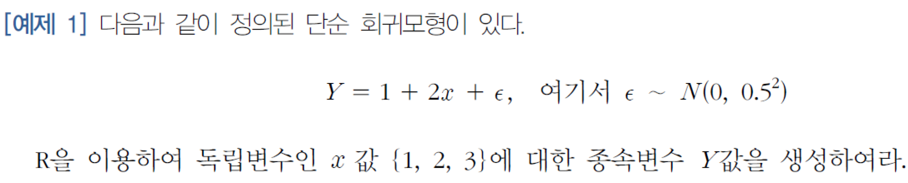
x=1:3
y= 1+2*x+rnorm(3,0,0.5)
signif(y,3) #signif는 유효숫자를 정해준다. 여기서는 유효숫자를 3자리로 정한다.[1] 3.11 4.60 6.47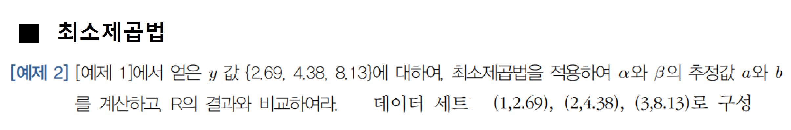
y=c(2.69,4.38,8.13) #주어진 데이터세트와 같도록 y 변경
lm(y~x)
Call:
lm(formula = y ~ x)
Coefficients:
(Intercept) x
-0.3733 2.7200 (Intercept) = \(\alpha\)의 추정량 a
x = \(\beta\)의 추정량 b
anova(lm(y~x))Analysis of Variance Table
Response: y
Df Sum Sq Mean Sq F value Pr(>F)
x 1 14.7968 14.7968 20.921 0.137
Residuals 1 0.7073 0.7073 SSR = 14.7968, MSR = 14.7968(SSR을 자유도로 나눠준 값)
SSE = 0.7073, MSE = 0.7073(SSE를 자유도로 나눠준 값)
F-value = MSR/MSE ~ F(1,n-2)의 분포
p값 = 0.137
굉장히 큰 p값을 갖고있다. 이는 귀무가설 Ho(\(\beta = 0\))을 기각하지 못한다는 의미이다. 즉, x가 y에 영향을 미치지 못하는 것이다.
왜냐하면, 데이터 수가 작기 때문이다. 데이터가 충분하지 않다면 귀무가설을 기각하지 못하도록 가설검정은 귀무가설에 선호도를 두고 있다.
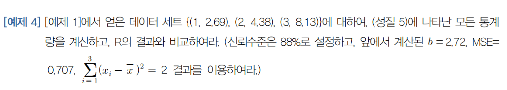
# b의 분산의 불편추정량 = MSE/sigma(x-xbar)^2
# MSE = 0.707
# sigma(x-xbar)^2 = 2
Varb = 0.707/2
Varb # $\beta$에 대한 추정량 b의 분산에 대한 추정량[1] 0.3535SEb = sqrt(Varb)
SEb # $\beta$에 대한 추정량 b의 표준오차에 대한 추정량[1] 0.5945587# 검정통계량 t = b/sigmahat(b) ~ t(n-2)
# sigmahat(b) = $\beta$에 대한 추정량 b의 표준오차에 대한 추정량
b = 2.72
# sigmahat(b) = SEb
t = b/SEb
t[1] 4.5748222*(1-pt(t,1)) #양측검정[1] 0.1370024위에서 구한 분산분석표와 동일한 p값을 보여준다.
유의수준\(\alpha\)를 구해보자, \(신뢰수준= 1 - \alpha\) 이므로 \(\alpha = 1-0.88 = 0.12\)
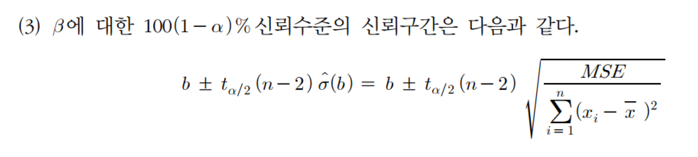 위 식(왼쪽식)을 이용하여 신뢰구간을 구하면
b + qt(1-0.06,1)*SEb #양쪽 검정이므로 alpha/2 = 0.06 이용[1] 5.836786b - qt(1-0.06,1)*SEb[1] -0.3967856이를 R에서 회귀분석 객체에 대한 summary()를 보고 파악할 수 있다.
M1 = lm(y~x)
summary(M1)
Call:
lm(formula = y ~ x)
Residuals:
1 2 3
0.3433 -0.6867 0.3433
Coefficients:
Estimate Std. Error t value Pr(>|t|)
(Intercept) -0.3733 1.2846 -0.291 0.820
x 2.7200 0.5947 4.574 0.137
Residual standard error: 0.841 on 1 degrees of freedom
Multiple R-squared: 0.9544, Adjusted R-squared: 0.9088
F-statistic: 20.92 on 1 and 1 DF, p-value: 0.137Coefficients에서 x행에 \(\beta\)에 대한 추정값 b, b의 표준오차에 대한 추정값, b의 검정통계량, 검정통계량에 의한 p값을 확인할 수 있다.
confint(M1,parm = 'x',level=0.88) 6 % 94 %
x -0.3973734 5.837373x행에서 신뢰수준 88%일때 \(\beta\)에 대한 추정량 b의 신뢰구간을 확인할 수 있다.
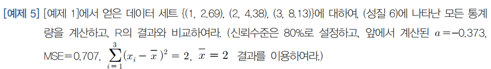
# n = 데이터의 갯수 = 3
# a의 분산의 불편추정량 = (1/n + xbar^2/sigma(x-xbar)^2)*MSE
# MSE = 0.707
# sigma(x-xbar)^2 = 2
# xbar = 2
VARa = (1/3 + 2^2/2)*0.707
VARa[1] 1.649667SEa = sqrt(VARa)
SEa[1] 1.284394# 검정통계량 tA = a/sigmahat(a) ~ t(n-2)
#sigmahat(a) = a의 표준오차에 대한 불편추정량 = SEa
a = -0.373
tA = a/SEa
tA[1] -0.29040942*pt(tA,1) #양측검정이므로 2를 곱했다.[1] 0.8200689이를 R에서 회귀분석 객체에 대한 summary()를 보고 파악할 수 있다.
M1 = lm(y~x)
summary(M1)
Call:
lm(formula = y ~ x)
Residuals:
1 2 3
0.3433 -0.6867 0.3433
Coefficients:
Estimate Std. Error t value Pr(>|t|)
(Intercept) -0.3733 1.2846 -0.291 0.820
x 2.7200 0.5947 4.574 0.137
Residual standard error: 0.841 on 1 degrees of freedom
Multiple R-squared: 0.9544, Adjusted R-squared: 0.9088
F-statistic: 20.92 on 1 and 1 DF, p-value: 0.137Coefficients에서 (Intercept)행에 \(\alpha\)에 대한 추정값 a, a의 표준오차에 대한 추정값, a의 검정통계량, 검정통계량에 의한 p값을 확인할 수 있다.
confint(M1,parm = '(Intercept)',level=0.80) 10 % 90 %
(Intercept) -4.327035 3.580369x행에서 신뢰수준 80%일때 \(\alpha\)에 대한 추정량 a의 신뢰구간을 확인할 수 있다.
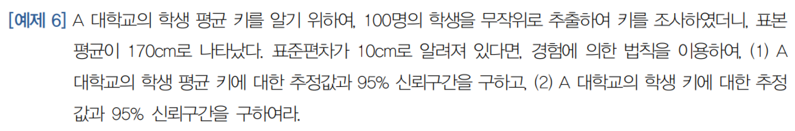
#(1)
# A대학교의 학생 평균키에 대한 추정값 = 170cm
# A대학교 학생 평균키의 표준편차
SE = 10/sqrt(100)
# 95% 신뢰구간을 경험에 의한 법칙을 이용하면
170 - 2*SE[1] 168170 + 2*SE[1] 172#(2)
# A대학교의 학생키에 대한 추정값 = 170cm
# 95% 신뢰구간을 경험에 의한 법칙을 이용하면
170 - 2*10[1] 150170 + 2*10[1] 190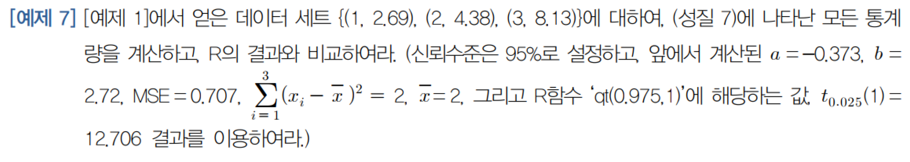
predict()에 interval = ‘confidence’ argument 사용
predict(M1, newdata = data.frame(x=c(1,2,3)),interval='confidence') fit lwr upr
1 2.346667 -7.408099 12.10143
2 5.066667 -1.102789 11.23612
3 7.786667 -1.968099 17.54143각 행은 x=1, x=2, x=3일 경우를 나타낸다.
fit 열에 추정값이 나오고 lwr,upr은 95% 신뢰구간의 상한,하한을 나타낸다.
predict()에 interval = ‘prediction’ argument 사용
predict(M1, newdata = data.frame(x=c(1,2,3)),interval='prediction') fit lwr upr
1 2.346667 -12.121988 16.81532
2 5.066667 -7.272244 17.40558
3 7.786667 -6.681988 22.25532E(Y)에 대한 추정량과 Y에 대한 추정량은 동일하지만, 신뢰구간에서 차이가 있음을 볼 수 있다. E(Y)에 대한 추정량의 신뢰구간이 Y에 대한 추정량의 신뢰구간보다 작다.
이는 두 추정량의 분산이 \(\sigma^2\) 만큼 차이가 나기 때문이다. \(\sigma^2\)의 불편추정량은 MSE이므로 두 추정량의 분산은 MSE만큼 차이가 난다.
Y에 대한 추정량의 신뢰구간 크기를 살펴보면 x=2일 경우 가장 작은 것을 확인할 수 있다.
P = predict(M1, newdata = data.frame(x=c(1,2,3)),interval='prediction')
for (i in 1:3) {
diff = P[i,'upr']-P[i,'lwr']
print(diff)
}[1] 28.93731
[1] 24.67782
[1] 28.93731x 평균값이 2이기 때문에 x=2일때 신뢰구간 폭이 가장 작은 것이다.
왜냐하면, x = 2일때, Y에 대한 추정량의 분산에서 \((x-\bar{x})^2\) 이 0이 되기 때문이다.
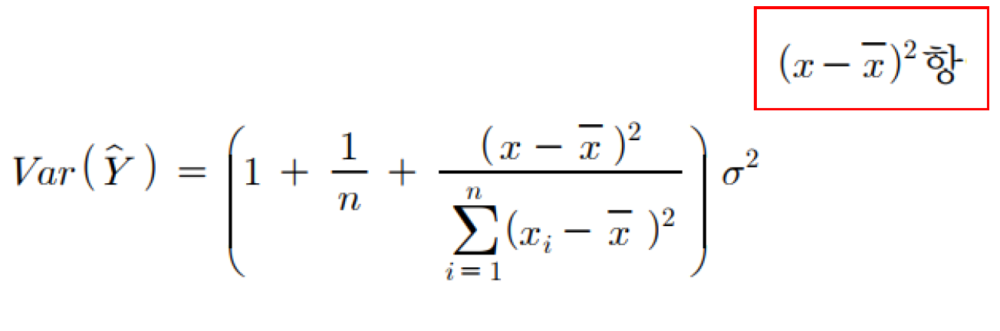
df1 = read_excel('아파트매매.xlsx',range = 'B4:E30')
class(df1)[1] "tbl_df" "tbl" "data.frame"티블(tibble)인 df1을 데이터프레임으로 변경한다.
티블은 변환과정에서 행이름을 유지하지않고 매번 변경한다. 이렇게 되면, 영향점을 찾기 어려워지므로 데이터프레임으로 클래스를 변경한다.
df1 = as.data.frame(df1)
class(df1)[1] "data.frame"head(df1) Sales Dur Area Rooms
1 138.0 74 21 4
2 246.0 320 54 7
3 242.4 160 49 6
4 145.2 175 24 4
5 186.0 69 31 6
6 182.1 151 28 4M1 = lm(Sales~Area,df1)
summary(M1)
Call:
lm(formula = Sales ~ Area, data = df1)
Residuals:
Min 1Q Median 3Q Max
-44.911 -12.668 0.118 13.773 32.511
Coefficients:
Estimate Std. Error t value Pr(>|t|)
(Intercept) 53.2303 14.1499 3.762 0.00096 ***
Area 4.4015 0.4183 10.522 1.8e-10 ***
---
Signif. codes: 0 '***' 0.001 '**' 0.01 '*' 0.05 '.' 0.1 ' ' 1
Residual standard error: 18.52 on 24 degrees of freedom
Multiple R-squared: 0.8218, Adjusted R-squared: 0.8144
F-statistic: 110.7 on 1 and 24 DF, p-value: 1.804e-10회귀모형에 대한 유의성은 F검정의 p값으로 입증되었다.\(p-value=1.804\times10^{-10}\)
gvlma(M1)
Call:
lm(formula = Sales ~ Area, data = df1)
Coefficients:
(Intercept) Area
53.230 4.401
ASSESSMENT OF THE LINEAR MODEL ASSUMPTIONS
USING THE GLOBAL TEST ON 4 DEGREES-OF-FREEDOM:
Level of Significance = 0.05
Call:
gvlma(x = M1)
Value p-value Decision
Global Stat 9.95806 0.041140 Assumptions NOT satisfied!
Skewness 0.35702 0.550164 Assumptions acceptable.
Kurtosis 0.02303 0.879387 Assumptions acceptable.
Link Function 8.51237 0.003527 Assumptions NOT satisfied!
Heteroscedasticity 1.06565 0.301931 Assumptions acceptable.gvlma()의 귀무가설은 ’잔차가 선형성과 정규성을 잘 따른다.’이다. 그러므로, 귀무가설이 기각되면 (p값이 유의수준보다 작으면) 문제가 있는 것이다.
Global Stat, Link Function 항목을 보면 가정에 문제가 있는 것으로 나타난다. 이는, 모형의 선형성 가정에 문제가 있음을 암시한다.
plot(df1$Area,df1$Sales, pch =20, cex = 1.2, xlab = '면적 (단위: 평)', ylab = '매매가격 (단위: 백만원)', main = '면적에 따른 아파트 매매가격 변화', family= 'Noto Sans KR')
abline(M1, lwd = 2)
plot()에서 pch는 기호(점)의 모양을 결정하는 parameter이다.(아래 그림 확인) 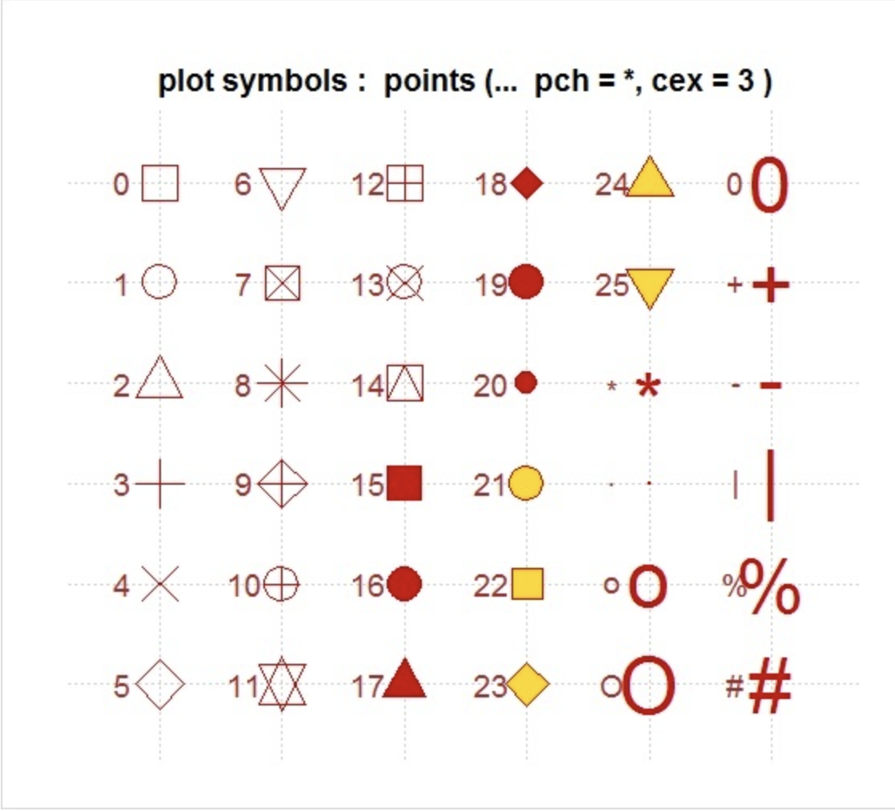
cex는 기호(점)의 크기를 결정한다.
plot(fitted(M1),rstudent(M1), xlab = '예측값', ylab = '외적 스튜던트화된 잔차', main = '예측값에 따른 외적 스튜던트화된 잔차', family = 'Noto Sans KR')
abline(h=0)
fitted(M1)은 M1 회귀분석에 의해 적합한, 즉 예측한 값을 보여준다. rstudent(M1)은 M1 회귀분석의 잔차를 외적 스튜던트화한다.
표준화 혹은 스튜던트화된 잔차는 평균0, 표준편차 1의 분포를 따라야 한다. 그러나 \(\pm2\)이상이라면, mild outlier, \(\pm3\)이상이라면 extreme outlier로 판단한다.
본 실습에선 외적 스튜던트화한 잔차가 \(\pm1.5\) 이상인 데이터를 극단값으로 봤다.
outliers = abs(rstudent(M1))>1.5
outliers 1 2 3 4 5 6 7 8 9 10 11 12 13
FALSE TRUE TRUE FALSE FALSE FALSE FALSE FALSE FALSE FALSE FALSE TRUE TRUE
14 15 16 17 18 19 20 21 22 23 24 25 26
FALSE FALSE FALSE FALSE FALSE FALSE FALSE FALSE FALSE FALSE FALSE FALSE FALSE cbind(df1[outliers,],rstud = rstudent(M1)[outliers]) Sales Dur Area Rooms rstud
2 246.0 320 54 7 -3.410073
3 242.4 160 49 6 -1.628257
12 257.4 125 39 5 1.906398
13 234.0 83 35 5 1.512461레버리지는 \((x-\bar{x})^2\)값인데 이는 레버리지가 x값이 평균으로 부터 멀리 떨어질 수록 커짐을 의미한다. 레버리지는 hat value라고 부르며, R에서도 hatvalues()를 이용하여 알 수 있다.
hat value는 모든 데이터 n개가 균등한 영향을 미쳐서 \(1/n\) 인게 가장 이상적이다. 이보다 2 ~4배 높은 값을 가지면 높은 레버리지를 갖는다고 판단한다.
본 실습에선 4배의 값을 가지면 높은 레버리지를 갖는다고 판단했다.
leverage = hatvalues(M1) > 4/26
leverage 1 2 3 4 5 6 7 8 9 10 11 12 13
FALSE TRUE TRUE FALSE FALSE FALSE FALSE FALSE FALSE FALSE FALSE FALSE FALSE
14 15 16 17 18 19 20 21 22 23 24 25 26
FALSE TRUE FALSE FALSE FALSE FALSE FALSE FALSE FALSE FALSE FALSE FALSE FALSE cbind(df1[leverage,],hatv = hatvalues(M1)[leverage]) Sales Dur Area Rooms hatv
2 246.0 320 54 7 0.2701578
3 242.4 160 49 6 0.1741776
15 126.0 62 16 4 0.1806548DFFITS 통계량은 모든 데이터(n개)를 이용하여 만들어진 i번째 예측값 \(\hat{y_i}\)와 i번째 데이터를 제거하고 (n-1)개의 데이터만으로 예측한 i번째 예측값 \(\hat{y}_{(-i)}\)의 차이를 스튜던트화한 수치이다.
DFFITS 통계량 수치가 크면 \(\hat{y_i}\)와 \(\hat{y}_{(-i)}\)의 차이가 크다는 의미이기 때문에 i번째 데이터의 영향력이 매우 큼을 보여준다.
DFFITS 통계량이 \(2\sqrt{3/(n-3)}\)이상이면 영향점이라 판단할 수 있다.
Dffits = abs(dffits(M1)) > 2*sqrt(3/(26-3))
Dffits 1 2 3 4 5 6 7 8 9 10 11 12 13
FALSE TRUE TRUE FALSE FALSE FALSE FALSE FALSE FALSE FALSE FALSE FALSE FALSE
14 15 16 17 18 19 20 21 22 23 24 25 26
FALSE FALSE FALSE FALSE FALSE FALSE FALSE FALSE FALSE FALSE FALSE FALSE FALSE cbind(df1[Dffits,],dffi=dffits(M1)[Dffits]) Sales Dur Area Rooms dffi
2 246.0 320 54 7 -2.0747129
3 242.4 160 49 6 -0.7477835DFFITS 통계량은 i번째 예측값(1개)만 비교하지만, Cook’s D 통계량은 모든 예측값(n-1개)의 차이를 고려한다. 즉, i번째 데이터가 있는 상태에서의 모든 예측값과 i번째 데이터가 없는 상태에서의 모든 예측값을 비교한다는 것이다.
Cook’s D 통계량은 SSE의 자유도인 n-2를 균등 배분한 \(1/(n-2)\) 값을 갖는 것이 이상적이다. 이보다 4배 이상 큰 값 즉, \(4/(n-2)\)이상을 가지면 이상점으로 판단 할 수 있다.
0.5보다 크면 의심가는 영향점이고, 1보다 크면 거의 확실한 영향점으로 판단한다.
CookD = cooks.distance(M1) > 4/(26-2)
CookD 1 2 3 4 5 6 7 8 9 10 11 12 13
FALSE TRUE TRUE FALSE FALSE FALSE FALSE FALSE FALSE FALSE FALSE FALSE FALSE
14 15 16 17 18 19 20 21 22 23 24 25 26
FALSE FALSE FALSE FALSE FALSE FALSE FALSE FALSE FALSE FALSE FALSE FALSE FALSE cbind(df1[CookD,],CookD = cooks.distance(M1)[CookD]) Sales Dur Area Rooms CookD
2 246.0 320 54 7 1.4916342
3 242.4 160 49 6 0.2615923par(mfrow = c(2, 2))
plot(M1)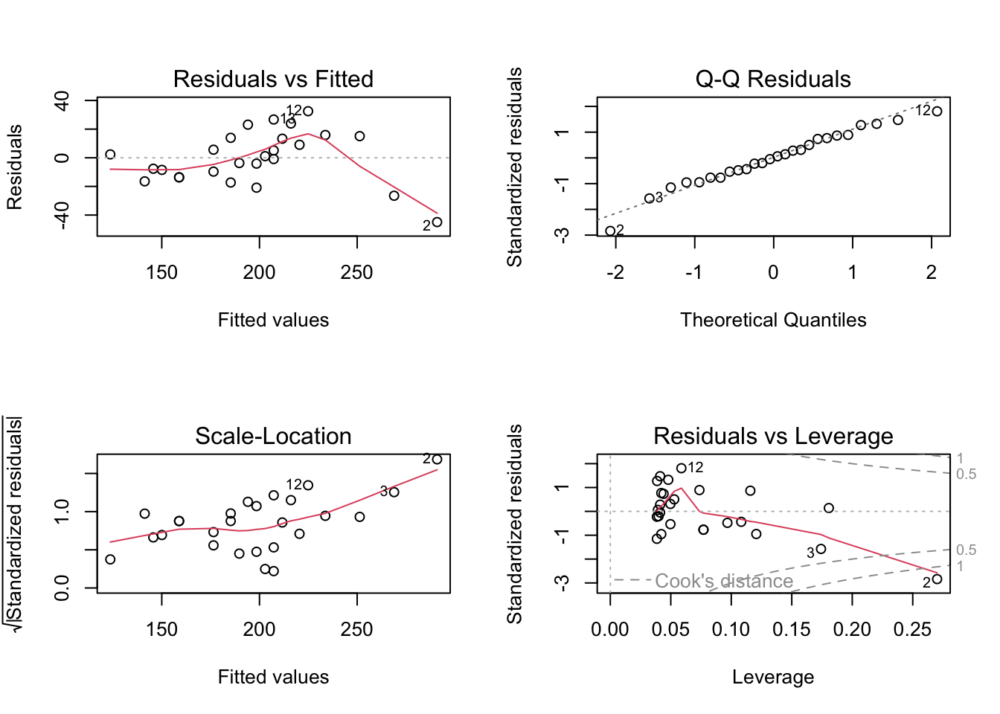
영향점으로 판단한 2, 3번 데이터를 제거한다.
df2 = df1[-c(2,3),]영향점을 제거한 데이터 df2로 다시 회귀분석 한다.
M2 = lm(Sales~Area, df2)
summary(M2)
Call:
lm(formula = Sales ~ Area, data = df2)
Residuals:
Min 1Q Median 3Q Max
-26.239 -7.583 -2.715 8.064 19.523
Coefficients:
Estimate Std. Error t value Pr(>|t|)
(Intercept) 16.6323 11.5252 1.443 0.163
Area 5.6729 0.3612 15.705 1.94e-13 ***
---
Signif. codes: 0 '***' 0.001 '**' 0.01 '*' 0.05 '.' 0.1 ' ' 1
Residual standard error: 12.41 on 22 degrees of freedom
Multiple R-squared: 0.9181, Adjusted R-squared: 0.9144
F-statistic: 246.6 on 1 and 22 DF, p-value: 1.944e-13회귀모형에 대한 유의성은 F검정의 p값으로 입증되었다.\(p-value=1.942\times10^{-13}\)
Adjusted R-squared: 0.9144로 매우 높은 적합도를 갖고 있다.
gvlma(M2)
Call:
lm(formula = Sales ~ Area, data = df2)
Coefficients:
(Intercept) Area
16.632 5.673
ASSESSMENT OF THE LINEAR MODEL ASSUMPTIONS
USING THE GLOBAL TEST ON 4 DEGREES-OF-FREEDOM:
Level of Significance = 0.05
Call:
gvlma(x = M2)
Value p-value Decision
Global Stat 1.39657 0.8448 Assumptions acceptable.
Skewness 0.03149 0.8592 Assumptions acceptable.
Kurtosis 0.22197 0.6375 Assumptions acceptable.
Link Function 1.12601 0.2886 Assumptions acceptable.
Heteroscedasticity 0.01710 0.8960 Assumptions acceptable.gvlma()를 통한 잔차분석 결과 모든 p값이 높기 때문에 안정적이라 볼 수 있다.
영향점을 제거하기 전과 후의 회귀방정식은 완전히 다르다.
제거전
\(\hat{y} = 53.2283 + 4.4016x\)
제거후
\(\hat{y} = 16.6267 + 5.6732x\)
Durbin-Watson 검정으로 잔차 간 독립성 검정을 실행한다. 이 검정은 자기상관계수(autocorrelation)가 0이라는(상관관계가 없다는) 귀무가설에 대한 검정이다.
car::durbinWatsonTest()를 이용한다.
durbinWatsonTest(M2) lag Autocorrelation D-W Statistic p-value
1 -0.05941592 2.109097 0.806
Alternative hypothesis: rho != 0p값이 0.782로 유의수준 5%에서는 귀무가설을 기각할 수 없다. 그러므로 독립성 가정에 큰 무리가 없다고 판단할 수 있다.
이는 데이터 측정과정에서 발생할 수 있는 오차를 검정하는 것이기에, 본 실습에서는 정보의 제약으로 진행하기 어렵다.
car::ncvTest()의 귀무가설은 ’등분산성을 만족한다’이다.
ncvTest(M2)Non-constant Variance Score Test
Variance formula: ~ fitted.values
Chisquare = 0.01436403, Df = 1, p = 0.9046p값이 0.90496으로 매우 높기 때문에 유의수준 5%에선 기각할 수 없다. 그러므로, 등분산성 가정이 깨지지 않았다고 보는 것이 타당하다.
shapiro.test()를 이용한다. 이때 residuals()로 회귀분석에 의해 적합한 회귀모형의 잔차를 추출하여 그 값을 shapiro.test()의 인수로 넣어야 한다.
shapiro.test()의 귀무가설은 ’잔차가 정규분포를 따른다.’이다.
shapiro.test(residuals(M2))
Shapiro-Wilk normality test
data: residuals(M2)
W = 0.93637, p-value = 0.1353p값이 0.1357로 유의수준 5%에서 귀무가설을 기각할 수 없다. 잔차가 정규분포를 따른다고 볼 수 있다.
par(mfrow=c(1,2))
plot(M1,which = 3)
plot(M2,which = 3)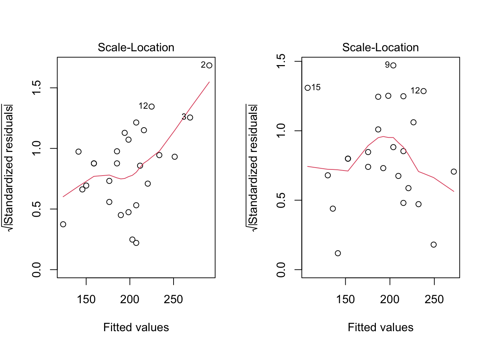
왼쪽은 영향점 제거전 M1의 slp(scale-location plot)그래프, 오른쪽은 영향점을 제거한 M2의 slp이다.
M1의 slp는 예측값이 커질수록 잔차가 커지는 반면, M2의 slp는 비교적 안정적인 그래프를 보여준다.
slp(M2)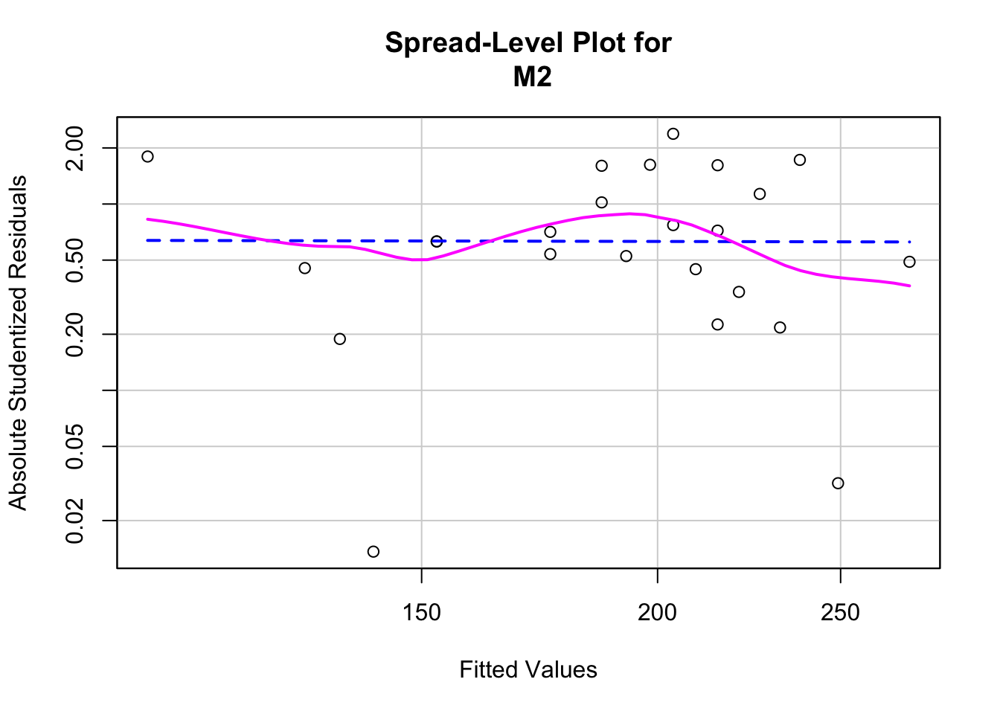
Suggested power transformation: 1.020367 Suggested power transformation: 1.022764 즉, \(\lambda\)가 1에 가까우므로 변환이 필요 없음을 알 수 있다.
powerTransform(M2)Estimated transformation parameter
Y1
0.1522993 하지만 Box-Cox변환에 의하면 \(\lambda\)추정값이 0.15로 \(y^{0.15}\)혹은 \(log(y)\)변환을 제안하고 있다.